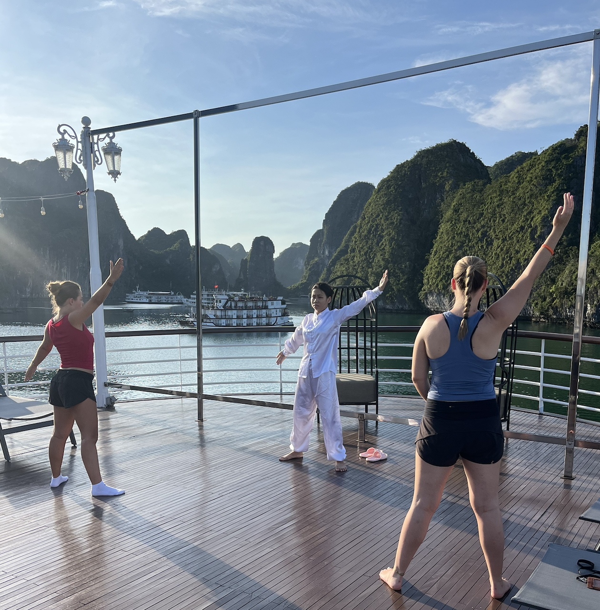
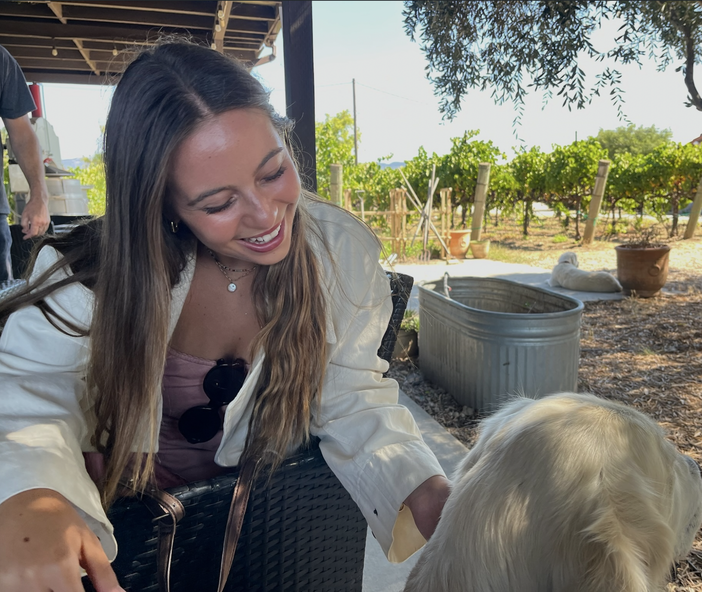
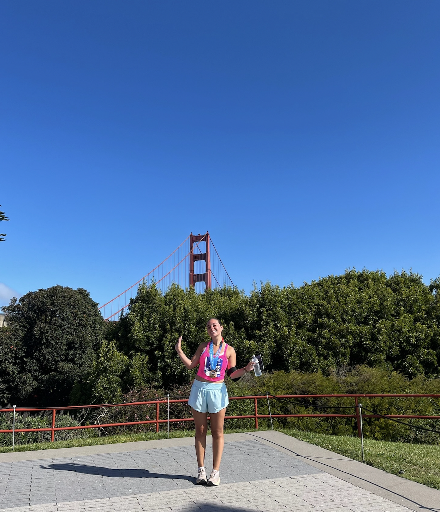

About Me
Hi! I'm a student at Northeastern University, studying Business Administration with a concentration in Entrepreneurship and a minor in Data Science. I'm passionate about the intersection of business, technology, and data, especially how technology can improve people's everyday experiences.
Throughout college, I've had opportunities to explore these interests through academic projects, internships, and extracurricular activities. I've gained experience working in product management and data analytics at companies including PayPal and WHOOP. These experiences have helped me understand how businesses use data to identify problems, develop solutions, and improve their products.
One of my favorite aspects of data science is visualization. I enjoy taking complicated data and transforming it into clear, meaningful insights that people can understand and use. I find it particularly interesting how different visualization techniques can reveal patterns, relationships, and trends that might otherwise go unnoticed.
Outside of academics and work, I enjoy running, traveling, and exploring new places. Last summer, I had the opportuinty to travel to Thailand and Vietnam, and when I graduate in December, I will be traveling to Australia, New Zealand, and Japan for six weeks. I also love learning about entrepreneurship and emerging technologies, particularly artificial intelligence. I'm always interested in new ideas and opportunities to build useful products. Looking ahead, I hope to continue exploring the intersection of technology, business, and analytics while developing skills that help me create meaningful impact.
My Photo Gallery



Contact Me
Feel free to connect with me!